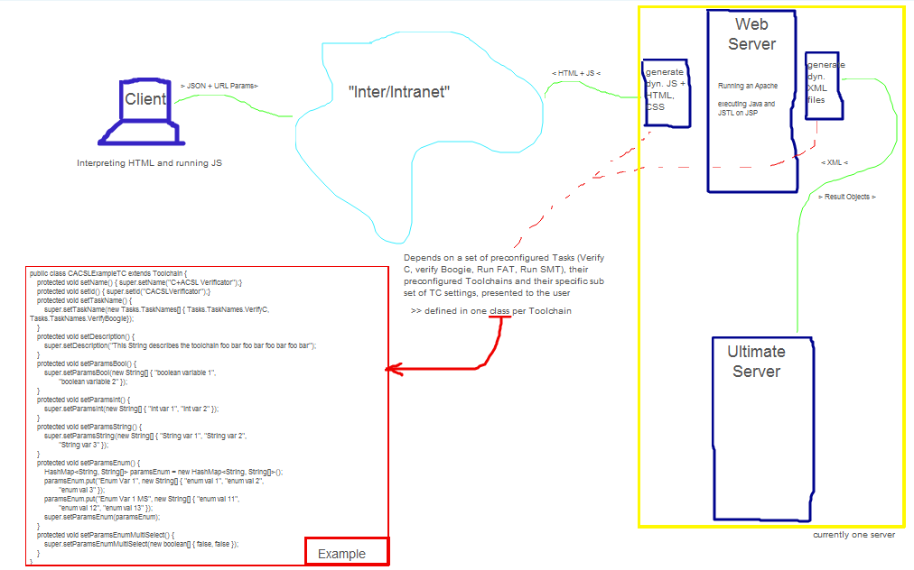
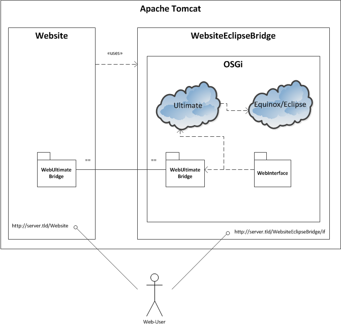
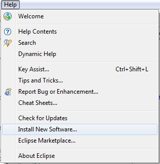
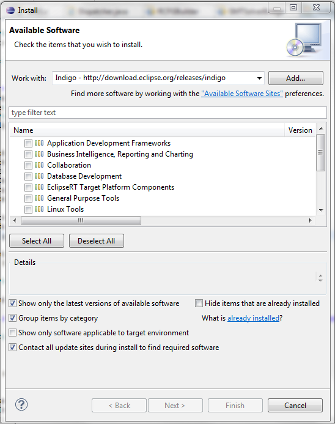
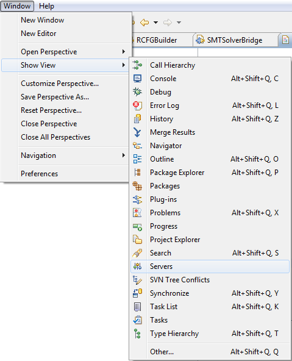
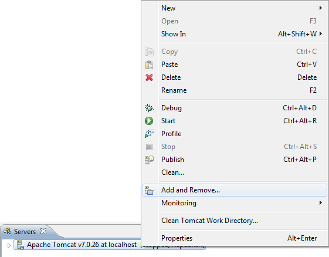

Project: WebsiteEclipseBridge
Project Description
This project starts OSGi on Tomcat in which an Equinox/Eclipse
environment is started. All Ultimate plug-ins (except all plug-ins
contributing to the GUI, i.e. Jung*, CDTDummyParser, CDTPlugin, GuiRCP
and log4j) are started in OSGi as a bundle.
High-level Sketch
The following picture describes the rough sketch and i.e. the data flow
of the website. It is in many cases obsolete and not complete, but it
describes the basic idea in an easy manner:

Project dependencies
The following picture describes the structure of the web project.

Useful Links
Equinox
Servlet Bridge by Example
How to run the Website
Prepare your Eclipse
Assuming you are using Eclipse RCP, the following Plug-Ins are required
to run the Web-Server.
- JST Server Adapters
- JST Server Adapters Extension
- Eclipse Java EE Developer Tools
- WAR Products (Incubation)
- Equinox Target Components
- Eclipse Java Web Developer Tools
- Eclipse Web Developer Tools
Only the bold ones are necessary - the others are optional and add some
features that might help during the development process.
To install these packages, go to
Help
>
Install new Software
:

Then select the corresponding repository for your Eclipse
release in the new window:

Select the packages listed above and start the installation.
If the installation process of this packages runs into
dependency problems it might help to install the Eclipse updates
before installing the new plug-ins.
Click on Add required Plugins in the Configuration tab
in /WebsiteEclipseBridge/WebsiteEclipseBridge.warproduct
Option A: Run the web projects from Eclipse
- Download Tomcat and add a server adapter to your Eclipse. For
this, follow these steps:
- Download Tomcat from jakarta.apache.org/tomcat
- Extract the compressed file to a location, where you want
to have it
- In Eclipse, open your Servers view:
.
Note: if it is not in this list, select Other
...
- Right click in the newly opened Servers view and select
new>Server
...
- Select Tomcat in the version you downloaded it, and follow
the wizard.
(for more details refer to this)
- Add the Projects
Website and WebsiteEclipseBridge
to the server, by right clicking the new server in Servers view.

- Start Tomcat, by right clicking the server in Servers view
and selecting start.
- When Tomcat is in state started, open the eclipse
console view
- run the osgi command ss to see the osgi status; The
bundles
WebInterface should be in State RESOLVED.
Start this bundle with start WebInterface or start
#ID, where #ID is the ID number of WebInterface.
- You can now connect to: the Website and the
WebUltimateInterface
Note:
Check the OSGi status with ss. All bundles should
be <<LAZY>>, RESOLVED or STARTED except the unused and
system dependent window toolkits! If this is not the case, check the
missing bundle dependencies of the effected bundles witch bundle
#ID
Note:
You might want to add the logging.properties
file to your server's configuration, to see Ultimates log4j output.
Note:
Eclipse might want to start multiple instances of your Tomcat
Server accidently during the auto-publishing process. You can monitor
and prevent this behaviour in the Debug view which can be found the
same way as the Servers view, described above.
Note:
If some changes seem to be not published correctly and
automatically, use the Clean... and Clean
Tomcat working directory functions on the corresponding Server in
Servers view.
Option B: Run the web projects on external Tomcat
Export the Website project as WAR File using filename Website.war and
WebsiteEclipseBridge as WAR product using filename
WebsiteEclipseBridge.war and copy the two war files into tomcat's Webapps
folder.
Open Points:
- Toolchain definition is only an example - i.e. the settings
are not really working as some of them might not exist anymore.
- Design of the Website can easily be changed if required
(nearly everything concerning the layout is defined in CSS)
- Open multiple files automatically in multiple tabs is not as
easy as expected and was not implemented, as this behavior is browser
dependent. The current workaround is to open multiple tabs and open
the files in each tab.
See also